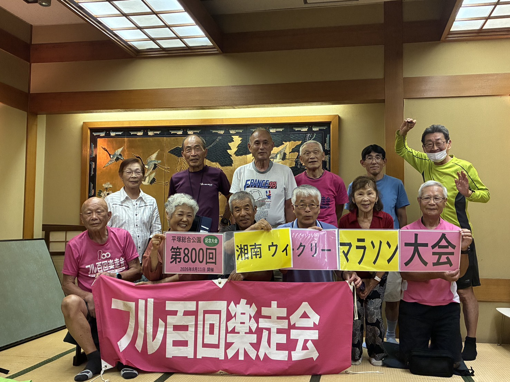
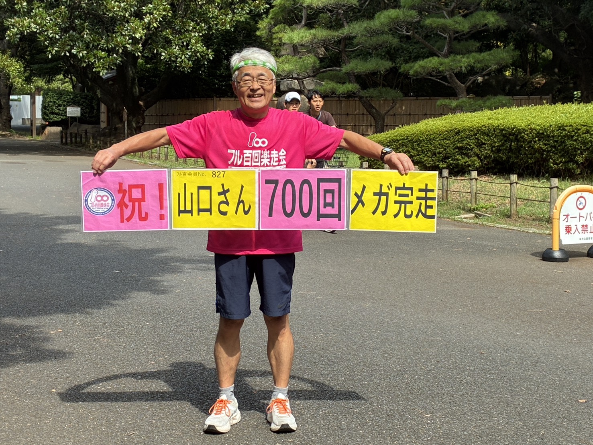

2026-08-11 18:17:56
2026年８月11日（火 祝）平塚運動総合公園 天候：晴 気温：23～32℃ 湿度：64％
| No | 地区会員番号 | 氏名 | 種目 | タイム | フル百 |
|---|---|---|---|---|---|
| 1 | 西松敏昭 | フル | 4:21:48 | ||
| 2 | 西田浩一 | フル | 6:48:00 | ||
| 3 | 340 | 島田八十美 | フル | 7:27:58 | 830 |
| 4 | 403 | 飯田和好 | フル | 7:37:18 | 881 |
| 5 | 11 | 渡辺富夫 | フル | 8:16:02 | 69 |
| 6 | 瀬戸君子 | フル | 9:06:00 | ||
| 7 | 30 | 竹田昭彦 | フル | 9:42:57 | 3 |
| 8 | 333 | 山口義治 | 30.7km | 5:42:21 | 827 |
| 9 | 98 | 田中国貞 | 17.0km | 3:18:59 | 746 |
| 10 | 145 | 植田秀夫 | 8.5km | 1:58:00 | 787 |
| 11 | 317 | 石井 功 | 8.5km | 3:00:00 | 817 |
| 12 | 206 | 古橋和子 | 5.1km | 1:09:00 | 565 |
| 13 | 坪田弘美 | 5.1km | 1:16:05 |
800回という節目の記念大会、スタートの2011、1月から15年7か月、大会開催にご尽力頂いた阿部様始め多くの方々に深く感謝‼遠方から西松・西田様が来られ13名の参加、7名のフル完走でした。幸い真夏にしては涼し気な陽気に助けられ、皆様お疲れ様。ラン終了後,レストラン大原にて山口会長のメガ700回完走祝も兼て小祝賀会を開催、久々の飲み会で昔話に花が咲き楽しい一時を過ごしました。古橋さん胡瓜の差入れ、植田・山口さん他 宴へのカンパどうも有難うございました。 （担当 渡辺トミー）

